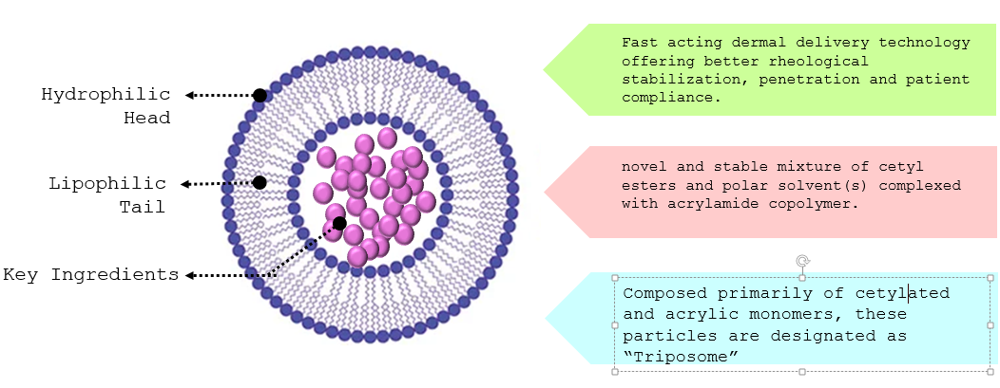
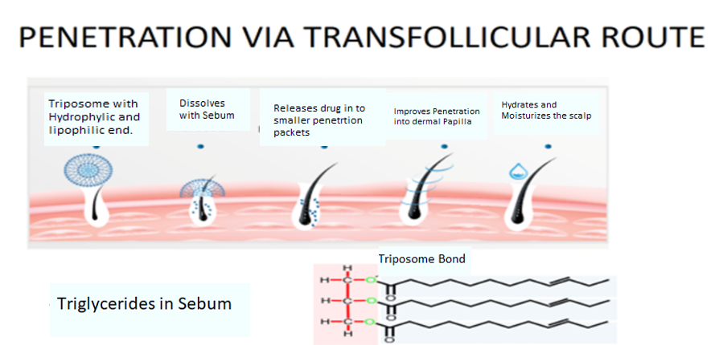
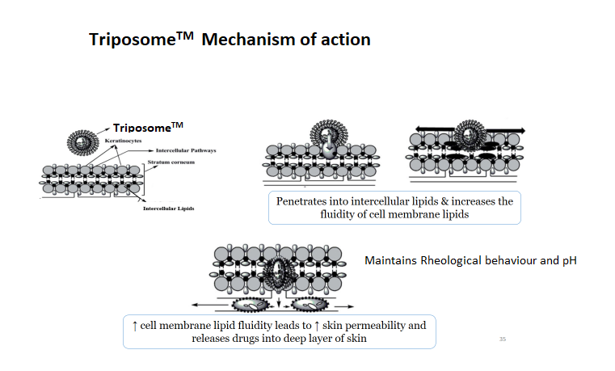
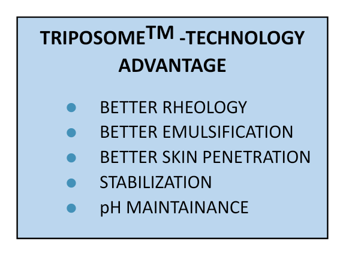
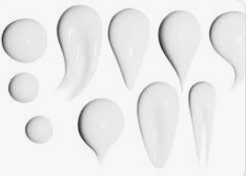

Molecular architecture
A tri-layer carrier modelled on the natural cell membrane. The outer layer, structural mid-layer and inner aqueous core are described as supporting stability and protecting sensitive actives.
Explore structure ↗A precision-built transdermal delivery system designed to navigate the skin barrier and release dermatologic actives where they perform.
Our nanoparticle formulations, built on Triposome, represent the intersection of dermatology, biochemistry and nanotechnology.
Triposome™ is a fast-acting dermal delivery technology designed to offer improved rheological stabilisation, penetration and patient compliance. Developed by ProCraft Innovations, it is a stable mixture of cetyl esters and polar solvent(s) complexed with acrylamide copolymer.
Under appropriate conditions and within a stabilised liquid dispersion, Triposome offers a dermal delivery platform for pharmaceutical, cosmetic and nutraceutical formulations through skin and scalp.
*As stated in the supplied Triposome™ user guide. Formulation suitability and performance should be evaluated for each finished product.
A novel approach to dermal delivery, exclusively developed by ProCraft Innovations. Its design brings together molecular architecture, targeting, stability and controlled release.
A tri-layer carrier modelled on the natural cell membrane. The outer layer, structural mid-layer and inner aqueous core are described as supporting stability and protecting sensitive actives.
Explore structure ↗Three mechanisms are described: carrier sizing in nanometres, zeta-potential calibration and receptor-mediated surface recognition.
Explore targeting ↗An antioxidant interface, pH-buffered microenvironment and compartmentalisation of hydrophilic and lipophilic compounds help protect sensitive actives.
Explore stability ↗Multi-phase kinetics are designed to deliver an initial burst, followed by sustained diffusion and a final protected release phase.
View case studies ↗
Illustrative architecture from the supplied technical material, showing hydrophilic and lipophilic regions around a key-ingredient core.
A precision-built delivery concept designed to navigate the skin barrier and release dermatologic actives where they perform.
Triposome™ carriers are described as traversing the stratum corneum, where conventional formulations may face limitations.
Surface receptor design is described as directing payloads towards specific cell populations within the dermis.
Multi-phase release is designed to maintain therapeutic concentrations across a 24-hour window.
Sensitive actives are protected from oxidation and pH degradation until delivery.
 SKIN PENETRATION PATHWAYS
SKIN PENETRATION PATHWAYSThe supplied technical material describes structural similarities between ceramides in epidermal lipids and the cetylated ester–acrylamide copolymer system in Triposome. This is presented as supporting movement through the epidermal barrier while carrying active ingredients towards the dermis.
On application, the fluid phase diffuses into the stratum corneum. The formulation components act together to support absorption, maintain rheological behaviour and help avoid a waxy film that could slow permeant migration.
Affinity between the active and the carrier components is described as helping prevent premature release and supporting controlled release within the dermis and stratum corneum.

The technical document describes the role of sebum affinity in the movement of key ingredients along the follicular pathway.
Triposome™-based drug and cosmetic formulations listed in the supplied product document.
Product names, indications and benefits are reproduced from the supplied content for informational purposes. This page does not constitute medical advice, a product label, or a claim of regulatory approval. Product availability and claims should be independently verified.
Case study summaries from the supplied Triposome™ technical document. Results are presented as reported in that material.
Comparison of a traditional alcohol-containing formulation, a Triposome™-based formulation and a glycol-rich alcohol-free formulation.

The supplied case study compares Triposome™-based lotion with alcohol-containing and high-glycol formulations.

The document describes Triposome™ technology in combination with plant stem cells, with reported areas of investigation including:

The case-study outcomes above are claims and summaries transcribed from the supplied document; underlying study protocols, raw datasets, statistical analyses and independent validation were not included in the source file.
Technical details and manufacturing guidance as supplied in the Triposome™ user guide.
Take the oil phase, aqueous phase and main manufacturing vessel.
Add oil-phase ingredients, including Triposome™, and heat to 65–75°C under stirring until a clear liquid forms.
Add aqueous-phase ingredients and heat to 65–75°C under stirring until a clear solution forms.
Mix both phases at 65–75°C for 1 to 1.5 hours under stirring and homogenisation. Additional surfactant may be required for stabilisation.
Cool to 30–35°C under slow stirring.
Apply vacuum to remove entrapped air bubbles from the bulk.
Selected technical diagrams and formulation-texture photographs reproduced from the supplied Triposome™ content document.






Images are taken from the supplied document. Please confirm usage rights and approve the formulation photographs before treating them as official product photography.
Safety Data Sheet (MSDS) is listed as a resource in the supplied website brief. The document itself was not included with the content provided.
Connect with ProCraft Innovations to discuss Triposome™ technology, formulation development and collaboration.
Reference website ↗Contact details can be added once the official business email and phone number are confirmed.